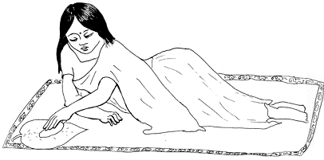

{% set pagetitle = 'Common complaints' %}
{% set seq_length = 0 %}
{% set seq_position = 0 %}
{% set seq_llink = "javascript:;" %} ## set rlink equal to next page href
{% set seq_rlink = "javascript:;" %} ## set llink equal to previous page href
{% extends "templates.jinja/base.page-with-sequence.html" %}
{% block title %} Hesperian - Pregnancy & Birth{% endblock %}
{% block id %}Nausea_during_pregnancy{% endblock %}
{% block content %}
Nausea

Many women have nausea in the first months of pregnancy. No one knows for sure what causes this, but for many women, the way they eat affects it. If the nausea is mild, encourage the woman to try any of these remedies:
Eat food that has protein before bed or during the night. Some good foods with protein are beans, nuts, and cheese.
Eat a few crackers, dry bread, dry tortillas, dry chapattis, or other grain food when she first wakes in the morning.
Eat many small meals instead of 2 or 3 larger ones, and take small sips of liquid often.
Take 50 mg vitamin B-6, 2 times a day (do not take more).
Drink a cup of ginger, mint, or cinnamon tea 2 or 3 times a day, before meals.